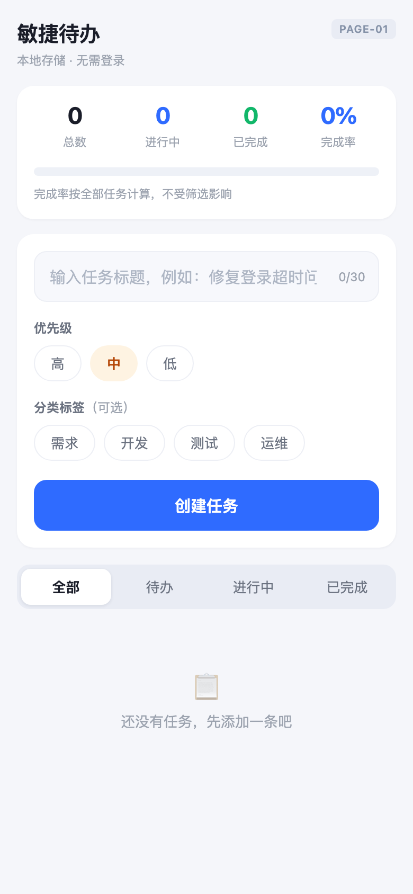
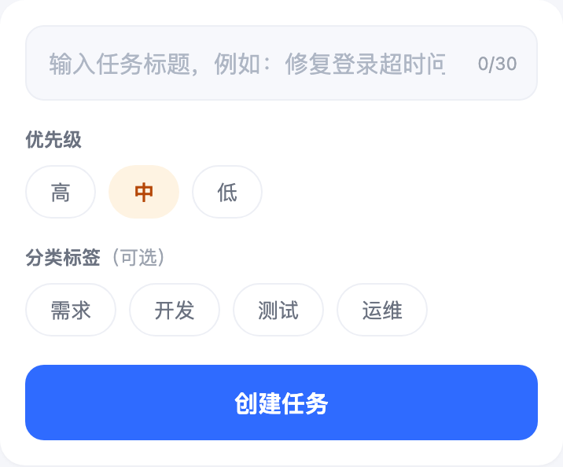

把 AI 能力，做成可以用的产品。
两个独立项目 · 实际工作流、产品界面与交付成果
01 / AI WORKFLOW
AI 产品方案工作台
输入需求，经过方案确认，生成可交互的高保真原型与 PRD。
个人项目
2026.08 - 2026.09
2026.08 - 2026.09
真实节点局部：原始需求 → 方案生成 → 用户确认 / 反馈修订 → 保存最新内容 → 进入下一阶段。
解决的问题
多轮 AI 对话需要反复交代需求，业务方案、原型与文档容易偏离。
我的关键设计
分阶段确认＋原型规格约束。AI 生成和修订，用户判断业务与交互，后续沿用最新确认内容。
完成的成果
跑通需求到原型、PRD 的交付；修正循环阻塞，补充超时退出路径。
真实生成成果
↗高保真交互原型
任务创建、状态推进与完成率展示

打开并操作原型 ↗
配套交付文档
图文 PRD 与 Word
同一案例的功能规则、界面与验收说明

任务快速创建
界面对应 / 业务规则 / 异常边界 / 验收算例
查看完整图文 PRD ↗AI 生成样例；文中的目标指标与发布计划不代表实测成果。
02 / AI RESEARCH
竞品分析助手
把长篇研究拆成可审核的任务，让分析过程和结论依据看得见。
个人项目
2026.07 - 2026.08
2026.07 - 2026.08
先定义分析对象、目标与范围，再选择竞品与生成方式，建立整份报告的分析口径。
实际分析案例：鱼泡直聘进入白领招聘市场。章节进度、正文和资料来源在同一工作台中展示。
研究稿保留详细依据，精简报告突出结论与建议；检查报告结构后，可导出 Markdown、Word 或 PDF。
解决的问题
反复组织提示词、长报告难以修改、引用文章缺少标记。
我的关键设计
Skill 固化九章方法，单 Agent 顺序编排。继承已确认上下文，按章节与竞品审核，关联正文和来源。
真实使用后的迭代
从控制台输出迭代为 Web 工作台，增加进度、来源标记、暂停恢复和失败重试。
实际生成报告 / 9 页
鱼泡直聘竞品分析报告
以 BOSS 直聘为核心竞品，分析白领招聘市场的进入机会，覆盖市场、产品、SWOT 与行动建议。
助手实际生成的案例产物；结论与预期价值为研究判断，不代表企业已采纳或实现。个人自用验证 · 本地 Web 应用 · 页面展示真实界面回看另一个项目 ↑